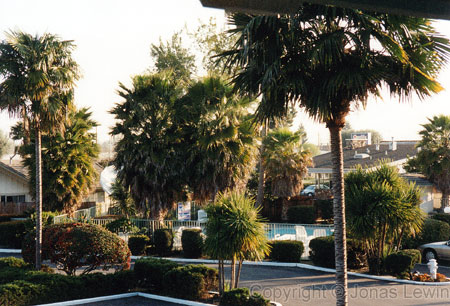
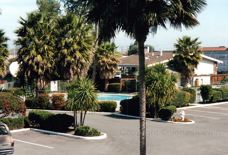
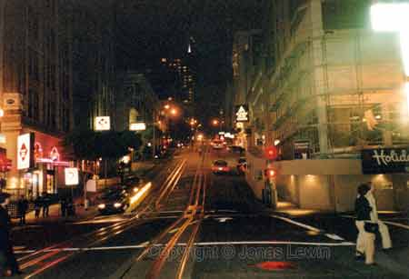
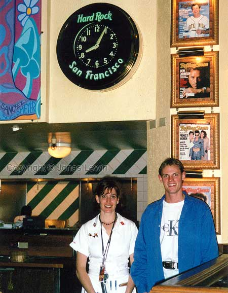

|
USA,
San Francisco, 1998-03
This
is the warmest place in USA I've been to. I was here during one of the
colder times of the year here, and it was just as warm as a Swedish spring
day. I had the same feeling about the weather in Sydney, Australia. Their
winter was quite warm for me. The difference between San Francisco and
Sydney is of course that one have summer when the other has winter.
When I was here, I went to the hotel pool, and just had a nice time, trying
to catch some rays. That week, I heard that one of the days was the official
day of spring. So, you can understand that people where looking strange at
me, using the pool in "winter". I'm used to the Swedish waters, so this was
no problem for me.
View
from my hotel window. As this was my first trip outside Europe, I enjoyed
this scenery immensely. A pool that I could use any time I felt like, and it
was March. Nobody else wanted to use the pool, as it was too cold for them.
Just
as many other people, I've walked across the golden gate bridge. The picture
here was taken when I was standing on the bridge, looking towards the sky.
You feel really tiny, which unfortunately this picture does not show. All I
can say is that there's a 10 lane freeway between those pillars. I hope that
gives you an idea of how big it really is.
This
was the only picture I got that displays the hills in San Francisco.
The traffic here is just as bad as every where else in the states. This was
the place where I first got in contact with fast food. It seems to me that
all Americans eat fast food. Probably this is just as wrong as saying that
all Swedes are blond and have blue eyes. But to me as tourist it appeared
that everyone where eating fast food; hence they all get fat.
To me they are stressing too much in the states, but a friend of mine told
me that this was only in the big cities. Since I have only been in the big
cities, I can neither confirm - nor deny this theory.
All I can say is that from my point of view, the Scandinavian people are more relaxed than the us
people, and this has been confirmed to me from Israelis and Americans. It
could be that we don't have that big cities, and that the weather is much
colder. Cold weather seems to slow down time in many aspects. And when time
is not as much of an issue, people tend to be more relaxed.
As this was my first trip outside Europe, I had to go to Hard Rock Café.
|